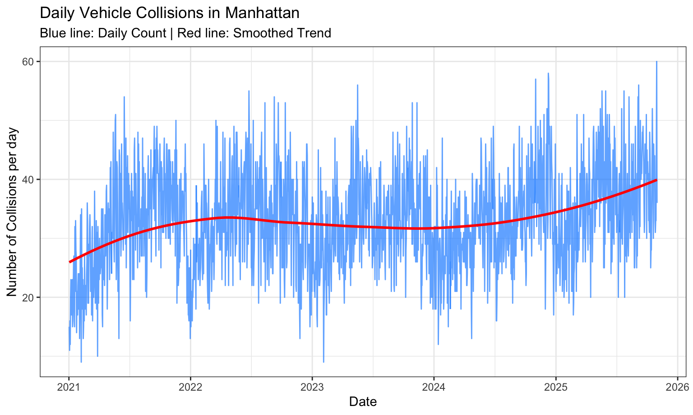
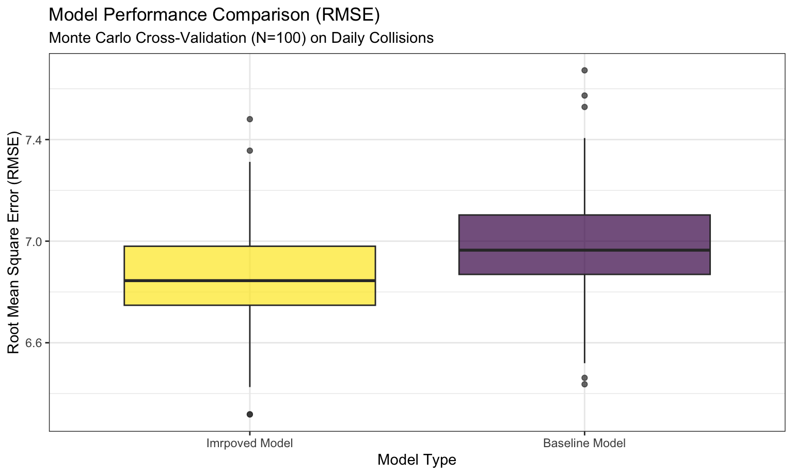

This page focuses on developing and validating two Linear Regression models to predict daily vehicle collision counts, using Monte Carlo Cross-Validation for robust performance comparison.
We first load the necessary libraries and aggregate the data to the daily level, creating all predictor variables, including time features, lagged collision counts, and lagged casualty counts.
# Load the dataset
df = read_csv("./data/collision_df.csv") |>
select(collision_id, year, month, day, hour, day_of_week, crash_time, num_casualty) |>
mutate(date = make_date(year, month, day)) |>
distinct(collision_id, date, num_casualty)
daily_data = df |>
group_by(date) |>
summarise(
# count collisions
collisions = n(),
# sum casualties
total_casualty = sum(num_casualty, na.rm = TRUE),
) |>
ungroup() |>
# ensure the time series is continuous
complete(date = seq(min(date), max(date), by = "day"),
fill = list(collisions = 0, total_casualty = 0)) |>
mutate(
# lagged features (set NA/first day's lag to 0)
collisions_lag1 = lag(collisions, n = 1, default = 0),
total_casualty_lag1 = lag(total_casualty, n = 1, default = 0),
# Time features
day_num = as.numeric(date),
day_of_week = factor(wday(date, label = TRUE), ordered = FALSE),
month = factor(month(date, label = TRUE), ordered = FALSE),
year = factor(year(date))
) |>
filter(row_number() > 1) # Remove the first row due to arbitrary lag defaultBefore modeling, visualize the daily collision trends over time.
ggplot(daily_data, aes(x = date, y = collisions)) +
geom_line(color = "dodgerblue", alpha = 0.7) +
geom_smooth(method = "loess", formula = 'y ~ x', color = "red", se = FALSE) +
labs(title = "Daily Vehicle Collisions in Manhattan",
subtitle = "Blue line: Daily Count | Red line: Smoothed Trend",
x = "Date",
y = "Number of Collisions per day") +
scale_x_date(
date_breaks = "1 year",
date_labels = "%Y"
)
There is an obvious upward trend in the count of collisions per day in Manhattan over the last 5 years.
We define two competing linear regression models: a Baseline Model that captures seasonal trends, and an Improved Model that incorporates lagged information.
The Baseline Linear Regression Model summary you provided assesses the impact of time and seasonal factors on daily collision counts.
\[\text{Collisions} \sim \text{Trend} + \text{DayOfWeek} + \text{Month} + \text{Year}\]
lm_baseline = lm(collisions ~ day_num + day_of_week + month + year, data = daily_data)
summary(lm_baseline)##
## Call:
## lm(formula = collisions ~ day_num + day_of_week + month + year,
## data = daily_data)
##
## Residuals:
## Min 1Q Median 3Q Max
## -24.0936 -4.5816 -0.2766 4.3457 27.4542
##
## Coefficients:
## Estimate Std. Error t value Pr(>|t|)
## (Intercept) 215.21969 349.49005 0.616 0.538100
## day_num -0.01048 0.01875 -0.559 0.576232
## day_of_weekMon 1.73879 0.61628 2.821 0.004836 **
## day_of_weekTue 4.24149 0.61630 6.882 8.20e-12 ***
## day_of_weekWed 5.14838 0.61630 8.354 < 2e-16 ***
## day_of_weekThu 6.90599 0.61629 11.206 < 2e-16 ***
## day_of_weekFri 7.14574 0.61630 11.595 < 2e-16 ***
## day_of_weekSat 4.22163 0.61629 6.850 1.02e-11 ***
## monthFeb 1.78986 0.97776 1.831 0.067337 .
## monthMar 5.27538 1.35909 3.882 0.000108 ***
## monthApr 6.71676 1.85778 3.615 0.000308 ***
## monthMay 11.56887 2.38512 4.850 1.34e-06 ***
## monthJun 12.85970 2.93269 4.385 1.23e-05 ***
## monthJul 9.00499 3.48509 2.584 0.009851 **
## monthAug 9.86521 4.05333 2.434 0.015039 *
## monthSep 13.90555 4.61666 3.012 0.002632 **
## monthOct 13.82858 5.17984 2.670 0.007663 **
## monthNov 11.85322 5.75427 2.060 0.039557 *
## monthDec 11.15707 6.31933 1.766 0.077647 .
## year2022 5.34484 6.86082 0.779 0.436063
## year2023 8.72380 13.69367 0.637 0.524164
## year2024 12.70712 20.54930 0.618 0.536411
## year2025 20.25789 27.39315 0.740 0.459689
## ---
## Signif. codes: 0 '***' 0.001 '**' 0.01 '*' 0.05 '.' 0.1 ' ' 1
##
## Residual standard error: 6.917 on 1741 degrees of freedom
## Multiple R-squared: 0.3107, Adjusted R-squared: 0.302
## F-statistic: 35.67 on 22 and 1741 DF, p-value: < 2.2e-16Based on the Baseline model, the Improved model will include both lagged collision counts and lagged casualty counts for maximum predictive power.
\[\text{Collisions} \sim \text{Baseline} + \text{Collisions}_{t-1} + \text{Casualties}_{t-1}\]
lm_lagged = lm(collisions ~ day_num + day_of_week + month + year + collisions_lag1 + total_casualty_lag1, data = daily_data)
summary(lm_lagged)##
## Call:
## lm(formula = collisions ~ day_num + day_of_week + month + year +
## collisions_lag1 + total_casualty_lag1, data = daily_data)
##
## Residuals:
## Min 1Q Median 3Q Max
## -20.4044 -4.6059 -0.3027 4.3371 26.6575
##
## Coefficients:
## Estimate Std. Error t value Pr(>|t|)
## (Intercept) 242.23670 343.48822 0.705 0.480764
## day_num -0.01218 0.01842 -0.661 0.508798
## day_of_weekMon 2.55413 0.61425 4.158 3.36e-05 ***
## day_of_weekTue 4.66576 0.60883 7.663 2.99e-14 ***
## day_of_weekWed 5.13098 0.60579 8.470 < 2e-16 ***
## day_of_weekThu 6.75600 0.60611 11.146 < 2e-16 ***
## day_of_weekFri 6.62615 0.60919 10.877 < 2e-16 ***
## day_of_weekSat 3.63980 0.61014 5.966 2.95e-09 ***
## monthFeb 1.61597 0.96169 1.680 0.093068 .
## monthMar 4.53209 1.33970 3.383 0.000733 ***
## monthApr 5.88443 1.83009 3.215 0.001327 **
## monthMay 9.98708 2.35561 4.240 2.36e-05 ***
## monthJun 11.16075 2.89255 3.858 0.000118 ***
## monthJul 8.14776 3.42933 2.376 0.017614 *
## monthAug 9.00325 3.98738 2.258 0.024073 *
## monthSep 12.29027 4.54297 2.705 0.006890 **
## monthOct 12.45204 5.09570 2.444 0.014639 *
## monthNov 10.76866 5.65768 1.903 0.057157 .
## monthDec 10.39166 6.21197 1.673 0.094538 .
## year2022 5.74003 6.74290 0.851 0.394737
## year2023 9.92654 13.45892 0.738 0.460891
## year2024 14.53096 20.19693 0.719 0.471952
## year2025 22.04129 26.92262 0.819 0.413075
## collisions_lag1 0.21300 0.02921 7.292 4.61e-13 ***
## total_casualty_lag1 -0.06734 0.03963 -1.699 0.089416 .
## ---
## Signif. codes: 0 '***' 0.001 '**' 0.01 '*' 0.05 '.' 0.1 ' ' 1
##
## Residual standard error: 6.798 on 1739 degrees of freedom
## Multiple R-squared: 0.335, Adjusted R-squared: 0.3258
## F-statistic: 36.51 on 24 and 1739 DF, p-value: < 2.2e-16We use 100 iterations of Monte Carlo cross-validation to assess which model generalizes better to unseen data.
# Create 100 Monte Carlo cross-validation splits
cv_df = crossv_mc(daily_data, n = 100) |>
mutate(
train = map(train, as_tibble),
test = map(test, as_tibble)
)
cv_df = cv_df |>
# fit models
mutate(
lm_baseline = map(train, \(df) lm(collisions ~ day_num + day_of_week + month + year, data = df)),
lm_lagged = map(train, \(df) lm(collisions ~ day_num + day_of_week + month + year + collisions_lag1 + total_casualty_lag1, data = df))
) |>
# evaluate models
mutate(
rmse_baseline = map2_dbl(lm_baseline, test, rmse),
rmse_lagged = map2_dbl(lm_lagged, test, rmse)
)Then visualize the distribution of RMSE values calculated across the 100 validation splits. The model with the lower median and tighter boxplot is the preferred predictive model.
# Tidy the RMSE results for plotting
rmse_comparison = cv_df |>
select(starts_with("rmse")) |>
pivot_longer(
everything(),
names_to = "model",
values_to = "rmse",
names_prefix = "rmse_"
)
# Create the Boxplots
ggplot(rmse_comparison, aes(x = fct_reorder(model, rmse, .fun = median), y = rmse, fill = model)) +
geom_boxplot(alpha = 0.7) +
labs(
title = "Model Performance Comparison (RMSE)",
subtitle = "Monte Carlo Cross-Validation (N=100) on Daily Collisions",
x = "Model Type",
y = "Root Mean Square Error (RMSE)"
) +
scale_x_discrete(labels = c("baseline" = "Baseline Model", "lagged" = "Imrpoved Model")) +
theme(legend.position = "none")
Interpretation: The model that consistently demonstrates lower RMSE on unseen data is the better choice for production forecasting. Based on plot above, the improved Model is expected to outperform the baseline, as recent history is a powerful predictor of daily collision counts.
We formally compare the Baseline and Imrpoved Models using ANOVA for nested comparison and information criteria (AIC/BIC) for model fit penalized by complexity.
# ANOVA test
anova_test = anova(lm_baseline, lm_lagged)
anova_test## Analysis of Variance Table
##
## Model 1: collisions ~ day_num + day_of_week + month + year
## Model 2: collisions ~ day_num + day_of_week + month + year + collisions_lag1 +
## total_casualty_lag1
## Res.Df RSS Df Sum of Sq F Pr(>F)
## 1 1741 83308
## 2 1739 80371 2 2937.1 31.775 2.795e-14 ***
## ---
## Signif. codes: 0 '***' 0.001 '**' 0.01 '*' 0.05 '.' 0.1 ' ' 1Interpretation: The ANOVA test compares the residual
sum of squares (RSS) between the two nested models. If the added terms
in the Improved Model significantly reduce the RSS, the test yields a
small p-value (typically \(p <
0.05\)). According to the result, the p-value (\(2.795 \times 10^{-14}\)) is far less than
0.05. Hence, We can reject the null hypothesis and conclude that the
added lag variables (collisions_lag1 and
total_casualty_lag1) provide a statistically significant
improvement to the model’s ability to explain the variance in
collisions.
# AIC and BIC Comparison
comparison_metrics <- tibble(
Model = c("Baseline", "Improved"),
Adj_R_Squared = c(
pull(broom::glance(lm_baseline), adj.r.squared),
pull(broom::glance(lm_lagged), adj.r.squared)
),
AIC = c(
AIC(lm_baseline),
AIC(lm_lagged)
),
BIC = c(
BIC(lm_baseline),
BIC(lm_lagged)
)
)
comparison_metrics |>
knitr::kable()| Model | Adj_R_Squared | AIC | BIC |
|---|---|---|---|
| Baseline | 0.3020101 | 11854.16 | 11985.57 |
| Improved | 0.3258438 | 11794.85 | 11937.21 |
Interpretation:
collisions.Based on the cross-validation and statistical tests, the Improved Model with additional lagged variables is the superior choice for predicting daily collision counts.
Predictive Power (RMSE): The cross-validated RMSE boxplot confirms the Improved Model consistently minimizes out-of-sample error compared to the Baseline Model.
Statistical Significance (ANOVA): The ANOVA test confirms that the addition of lagged features is statistically significant (\(P < 0.05\)), meaning they capture relevant information not covered by the standard time features.
Model Parsimony (AIC/BIC): The lower AIC and BIC scores for the Improved Model indicate it provides a more efficient fit to the data, demonstrating that its increased predictive accuracy justifies its higher complexity (more parameters).